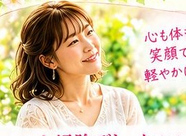
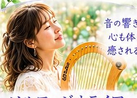
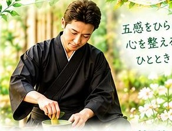

2027年を、最高の自分で迎える。
ソマチッド水と自然の恵み。
心・身体・感覚をひらく、特別な一日。
水にふれ、音にひたり、呼吸を感じ、自然の恵みを味わう。
2026年12月7日（月）14:30〜17:00（受付開始 14:15）
会場：千葉県松戸市馬橋（詳細はお申し込み後にご連絡します）
参加費：7,800円／定員：10名様（少人数制）
申込フォームが開きます
水にふれ、音にひたり、呼吸を感じ、自然の恵みを味わう。
今年一年を振り返り、心と身体に意識を向けながら、新しい年を迎える準備をしてみませんか？
今回のSomatid Detox Retreatでは、ソマチッド水を中心に、心のデトックスワーク、ライアーヒーリング、殺陣師の視点から伝える呼吸法と歩く瞑想、そしてテーブル茶道を組み合わせた特別な時間をご用意しました。
ソマチッドという不思議な存在への興味。自然の恵みや食への関心。音の響きに身をゆだねる時間。そして、自分自身の呼吸や身体の感覚を見つめるひととき。
3人それぞれの個性と経験が重なり合う、一日限りのコラボレーションです。
何かを信じることだけでも、何かにすべてを委ねることだけでもなく、自分自身で感じ、味わい、確かめてみる。そんな時間を一緒に過ごしましょう。
ソマチッドという存在をご存じでしょうか？
微小な存在として語られ、さまざまな研究や独自の考察が行われているソマチッド。今回のイベントでは、ソマチッド水を実際に味わい、食やお茶を通して触れていただきます。
ソマチッド水を提供するのは、自身の経験を通してソマチッド水と出会い、生米から作るお米パンや自然素材を生かした食づくりに取り組んでいる主婦のたかこさん。日々の暮らしの中で大切にしている食への思いや、ソマチッド水との出会いについても、ぜひお楽しみください。
当日は、たかこさん自身の体験と、ソマチッド水を提供するソマチ社による実験データにもとづく説明も交えながら、ソマチッド水をご紹介します。
目に見えないものへの好奇心から始まる、新しい発見。その出会いを、ぜひご自身の感覚で味わってみてください。

担当：たかこさん
今年一年を振り返り、心の中に溜め込んでいた思いや感情を整理する時間。日々の暮らしの中で、知らず知らずのうちに抱えていた気持ちを言葉にし、手放したいものや、これから大切にしていきたいものを見つめ直します。
新しい一年をどんな自分で迎えたいのか。自分自身と向き合い、心を軽くするきっかけを見つけてみましょう。
ワークの後には、ソマチッド水や自然の恵みを取り入れた、発芽玄米のお米パンとスイーツもお楽しみいただけます。

担当：美奈子さん
ライアーは、繊細で美しい音色を奏でる弦楽器。その響きに耳を傾け、普段は意識することの少ない音の世界を味わいます。
今回はソルフェジオ周波数をテーマにしたライアーの演奏と、自然の音や響きを楽しむ時間をご用意しました。
音を聴いて何を感じるかは、一人ひとり違います。心地よさ、懐かしさ、静けさ、あるいは言葉にならない何か。正解を求めることなく、そのとき自分が感じるものを大切にしてみてください。

担当：福田ひろし（福和倭迅会）
刀を扱う身体には、力だけではなく、呼吸、姿勢、重心、足運びといった繊細な感覚が必要です。長年、殺陣や舞台の身体表現に携わってきた経験から、日常生活にも生かせる身体の使い方をお伝えします。
まずは自然な呼吸と立ち方から。続いて、ゆっくりと歩く瞑想。そして最後は、テーブル茶道で一服。ソマチッド水を使った特別なお抹茶をご用意します。
正座が苦手な方や、茶道が初めての方も安心してご参加いただけます。
今回の3人のアプローチは、それぞれ異なります。
ソマチッド水や自然の恵みに触れ、食を楽しむ。ライアーの響きに耳を澄ませ、音を味わう。呼吸と身体の動きを感じ、歩き、そしてお茶をいただく。
入口は違っても、その先にあるのは、自分自身の感覚との出会いです。
新しいものに興味を持つこと。今まで知らなかった世界に触れること。そして、そこで何を感じるかを自分自身で確かめること。
この一日が、これからの暮らしや新しい一年を、少し違った視点で眺めるきっかけになれば嬉しく思います。
申し込む申込フォームが開きます
今回のイベントでは、ソマチッド水を提供するたかこさんによる、お米パンとスイーツのプレートをご用意しています。
生米から作るお米パンは、小麦粉を使わないグルテンフリーのプラントベース。素材や作り方にもこだわった、たかこさんならではの食の楽しみです。
また、可能であれば、ソマチッド水を使ったお菓子もご用意する予定です。
水から食へ、そしてお茶へ。今回ならではの味わいを、ぜひお楽しみください。
※提供内容は仕入れや準備状況により変更となる場合があります。
自身の経験をきっかけにソマチッド水と出会い、自然の恵みを生かした食づくりに取り組む。生米から作る発芽玄米のお米パンやスイーツを通して、食の楽しさと自分らしい暮らしを提案しています。今回はソマチッド水の提供と、心の大掃除デトックスワーク、食の時間を担当します。
ライアーの繊細な音色と響きを通して、日常から少し離れた静かな時間を届けます。音を聴き、自分自身が何を感じるのかを味わうひとときをご一緒します。
1999年より舞台に立ち、殺陣の指導・身体表現に携わる。日俳連アクション部会 殺陣上級ライセンス保持。殺陣で培った身体感覚を日常に生かす「呼吸・立つ・歩く」の実践と、椅子に座って楽しめるテーブル茶道を通して、身体と心に意識を向ける時間を提供しています。
※進行状況により時間や内容が変更になる場合があります。
申し込む申込フォームが開きます
天然鉱石「虹ソマチッド」100gプレゼント
今回のイベントでは、天然鉱石「虹ソマチッド」を参加者の皆さまにプレゼントします。ソマチッドに関心のある方にとって、新たな出会いや発見のきっかけとなれば嬉しく思います。
※鉱石の性質や取り扱いについては、提供者の説明をご確認ください。飲用・摂取を目的としたものではありません。
ソマチッド水に興味がある。ライアーの音色を聴いてみたい。呼吸や身体の使い方に関心がある。和のお茶を楽しんでみたい。自然の恵みを使った食に触れてみたい。
参加のきっかけは、どんなことでも構いません。初めての方も大歓迎です。
それぞれの体験を通して、普段とは少し違う自分自身との出会いを楽しんでみませんか？
今年一年を締めくくり、2027年を迎えるための特別な一日。皆さまとご一緒できることを楽しみにしています。
自然の力と、仲間たちと、最高の未来へ。
申し込む申込フォームが開きます
※このフォームは、ひろし・美奈子へのお申し込み窓口です。貴子さんへのお申し込みは、Instagram DM（@okome_smile）で受け付けています。
福和倭迅会 公式SNS
DMからもお申し込み・お問い合わせいただけます。